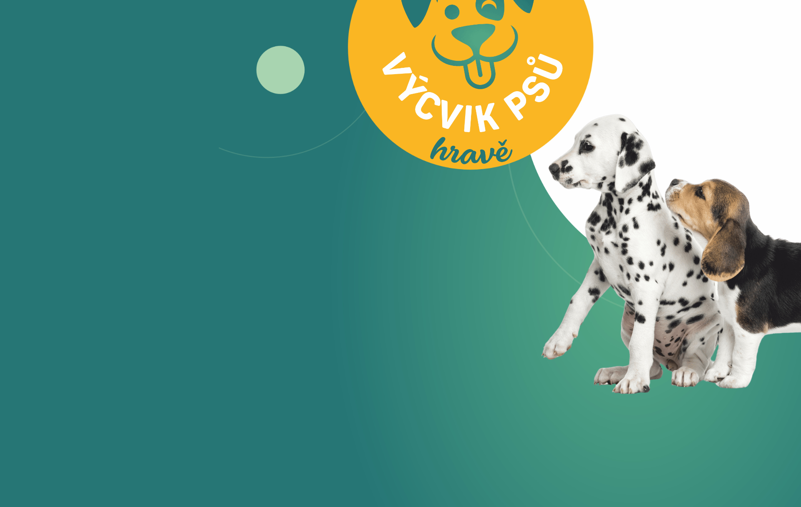
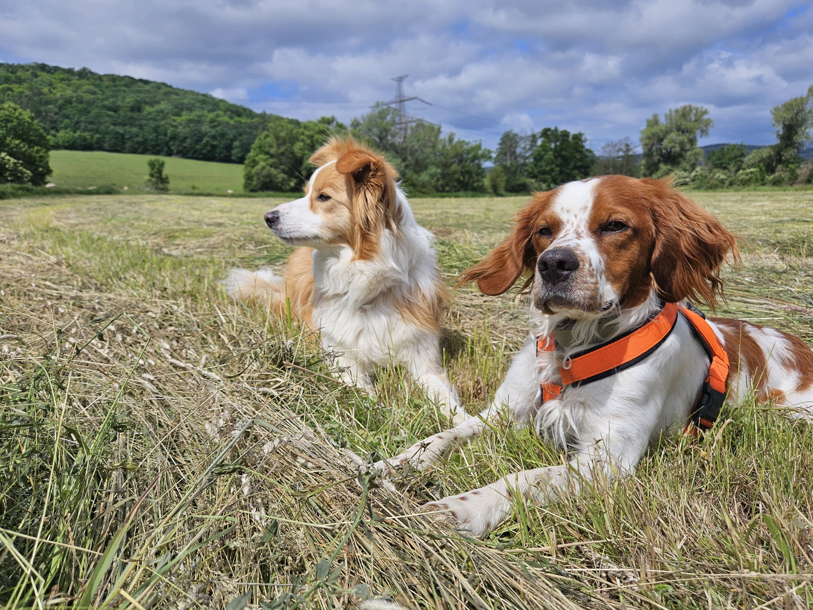
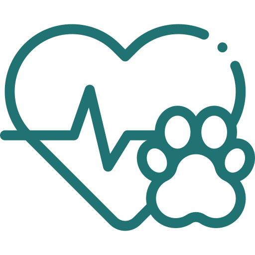
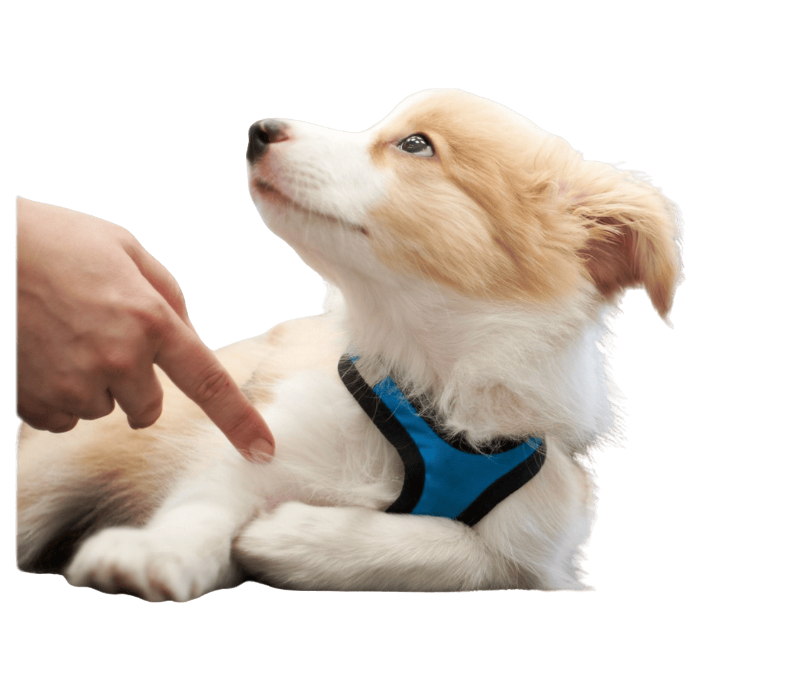
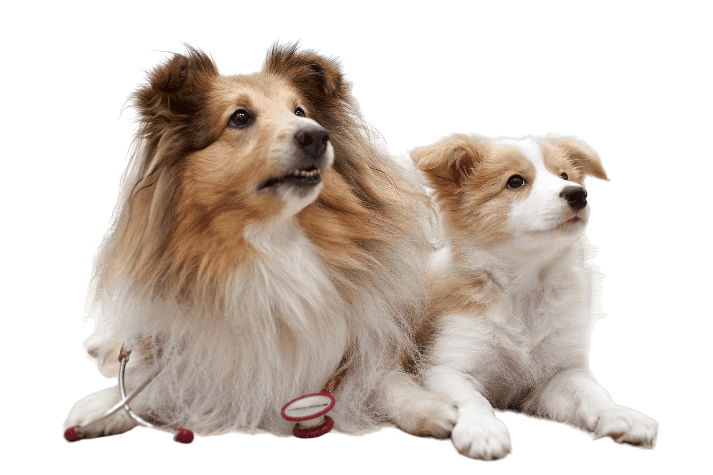

Výcvik psů hravě v Klášterci nad Ohří
- Nerozumíte si se svým pejskem?
- Chcete mu dopřát víc zábavy?
- Rádi byste si vylepšili svůj vztah?
Možná to znáte…
Pořídíte si štěně, těšíte se, jak vám to spolu půjde. Věnujete se mu, snažíte se, učíte povely… Ze začátku to funguje – a pak najednou začne něco skřípat.
Štěně venku nevnímá, nereaguje. A když přijde puberta, pes jako by „zapomněl“, co uměl. Najednou je to jiné, než jste si představovali.
Nejčastěji spolu řešíme:
-
 tahání na vodítku
tahání na vodítku
-
 přivolání a soustředění
přivolání a soustředění
-
 socializaci
socializaci
-
 výcvik štěňat
výcvik štěňat
-
 pubertu mladého psa
pubertu mladého psa
-
 reaktivitu a bázlivost
reaktivitu a bázlivost

"Každý pes je jiný, proto vždy hledáme cestu přímo pro vás."
Kde a jak společně trénujeme

Výcvik, který funguje i venku
Výcvik není jen o tom, co pes zvládne v klidu na cvičáku. Důležité je, aby fungoval tam, kde se skutečně pohybujete – mezi lidmi, auty a ostatními psy.
Proto cvičíme přímo v ulicích a parcích Klášterce nad Ohří. Pes se učí zvládat běžné podněty v klidu a vy získáte jistotu, jak reagovat v náročnějších chvílích.
Emoce a klid v přítomnosti psů
Mnoho psů venku na ostatní štěká nebo táhne, protože jsou nejistí nebo přehnaně aktivní. Zaměřujeme se na to, aby se váš pes cítil v přítomnosti jiných psů v bezpečí.
Na socializačních procházkách neučíme jen povely, ale budujeme schopnost psa zůstat v klidu. Cílem je, aby pro vašeho psa nebyli ostatní psi natolik atraktivní, že kvůli nim ztratí pozornost.

Lekce Výcviku psů hravě
Výcvik vždy přizpůsobujeme vám i vašemu pejskovi podle toho, co právě řešíte. Někdy je ideální individuální lekce s maximálním soustředěním, jindy naopak skupinové setkání, kde pes získá zkušenosti v přítomnosti dalších psů.
Lekce probíhají venku v reálném prostředí, aby se naučené věci snadno přenesly do každodenní praxe.
Individuální lekce
Maximální soustředění jen na vás a vašeho psa.
Skupinové hodiny
Trénink spolupráce a socializace v kontrolovaném kolektivu.


Veterinární manipulace
Nabízíme citlivý a postupný trénink přímo ve Veterinární ordinaci MVDr. Jiřího Kučery.
Co pejska naučíme
-

spolupracovat při ošetřování - snášet v klidu dotyky
- cítit se v ordinaci lépe
Proč se přihlásit:
Místo síly volíme spolupráci. Cílem není psa přemluvit, ale naučit vás najít společnou řeč. Vytvořit u něj jistotu a lepší zkušenost s veterinární péčí. Návštěva veteriny může být klidná pro vás oba.
"Člověk se učí číst signály psa a cíleným tréninkem posouváme hranice, kde se pes cítí v bezpečí a je ochotný spolupracovat."
Výcvik založený na vzájemném porozumění
Pracuji pomocí pozitivní motivace a klikru. Podporuji u psa samostatné přemýšlení a chuť spolupracovat. Pes nemusí poslouchat ze strachu, může spolupracovat, protože mu to dává smysl.
Dlouhou dobu jsem se věnovala agility a obedience. Postupně mě ale začalo víc zajímat to nejdůležitější: vztah mezi člověkem a psem v běžném životě. Věřím, že každý pes má své potřeby, které je třeba v tréninku respektovat.
"Moderní etický výcvik respektuje potřeby psa, buduje důvěru a vytváří pevné pouto."


Vztah založený na respektu
Vidíte ten rozdíl? Když pes ví, co se od něj čeká, a ví, že s vámi je v bezpečí, nepotřebuje dril. Potřebuje jen jasnou komunikaci.
Naším cílem je, aby pes hledal odpovědi u vás. Aby se na vás díval tak, jako tito psi na fotce – s důvěrou a očekáváním společné zábavy.
"Spolupráce je víc než jen poslušnost. Je to společný jazyk."
Pro koho je výcvik vhodný?
Pro lidi, kteří chtějí se psem aktivně trávit čas, budovat vztah a vnímat jeho potřeby. Pro příznivce moderního etického tréninku založeného na respektu.
Pro koho výcvik není vhodný?
Pokud hledáte dril a autoritativní přístup, tak to u nás nečekejte. K psovi přistupujeme jako k parťákovi, který má své potřeby a je na nás, abychom našli společnou cestu příjemnou pro obě strany.
Kdo tréninkem provází
Evka
Ke psům mě to táhlo odmalička. Postupně jsem prošla agility i obedience, ale nejvíc mě začalo bavit to, co je pro každodenní život nejdůležitější – vzájemné porozumění mezi člověkem a psem. Pracuji s pozitivní motivací a klikrem, protože věřím, že pes nemusí poslouchat ze strachu. Stačí, když pochopí, co od něj chceme, a má chuť spolupracovat. Baví mě hledat cestu ke každému psovi zvlášť – každý je jiný a každý si zaslouží individuální přístup.
Katka
Text o Katce bude doplněn... Jak začala s výcvikem, jaké má zkušenosti, co ji na práci se psy baví.
Co o nás píšou na Facebooku

Velice děkuji za perfektní poradenství. Tohle je skutečná psí psychologie. Už od prvního setkání se cosi začalo měnit a od třetího je pejsek jako vyměněný. Myslím, že je rád, že konečně proudí komunikace oběma směry. Nejsem začátečník, a přesto jsme dělali spoustu chyb plynoucích z nepochopení.
Včera ukončen kurz veterinární manipulace, jehož výsledkem je, že se naše šílená borderka do vet ordinace těší 😊. Moc děkujeme a budeme se těšit na další lekce!
Super přístup, trpělivost a vysvětlení všeho, co člověk dělal špatně. Pes je spokojený a já taky. Určitě doporučuji všem, kdo chtějí se psem pracovat hravě.
Rezervujte si termín
Vyberte si, co vás zajímá, a rezervujte si volný termín přímo online přes rezervační systém Dogres.
Socializační procházky a individuální i skupinové lekce – Výcvik psů hravě
Individuální výcvik v terénu, socializační procházky i skupinové lekce projektu Výcvik psů hravě, šité na míru vašemu psovi. Rezervujte si termín, který vám vyhovuje.
Tréninky v rámci ZKO Klášterec nad Ohří
Kromě lekcí přímo v terénu působím také v Základní kynologické organizaci Klášterec nad Ohří, kde vedu vybrané skupinové a individuální tréninky v areálu cvičiště.
Tyto lekce mají vlastní rezervační systém a najdete je přímo na webu ZKO Klášterec.
Nebo mi napište
Máte dotaz? Nevíte si rady? Napište mi a já se vám ozvu co nejdříve.
Odpovídám obvykle do 24 hodin. Těším se na vaši zprávu!
Kontaktní údaje
- Eva Kučerová
- Klášterec nad Ohří
- 776 009 890
- vycvik-hrave@seznam.cz
Odpovídám obvykle do 24 hodin. Těším se na vaši zprávu!